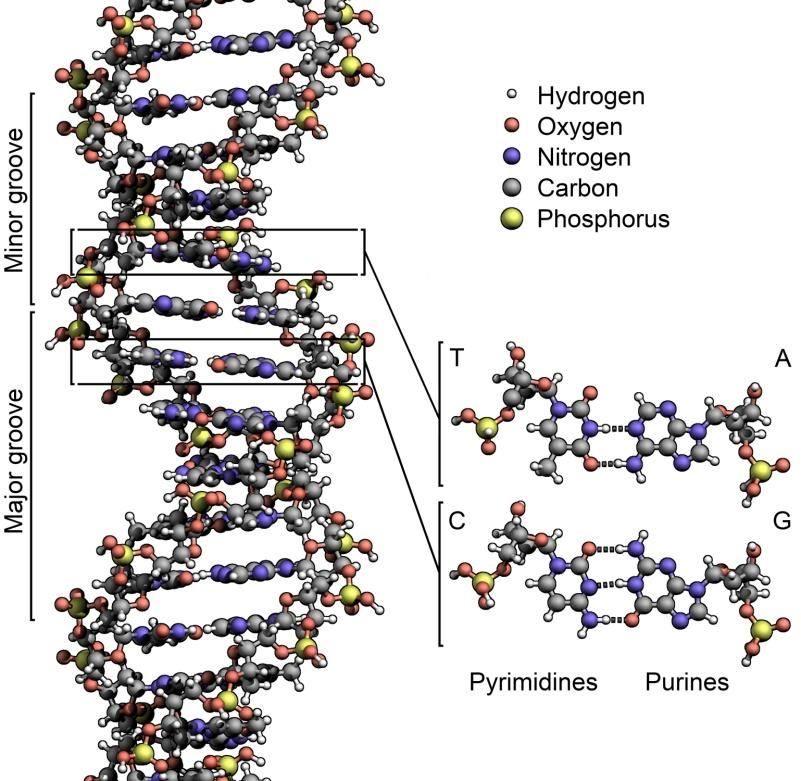
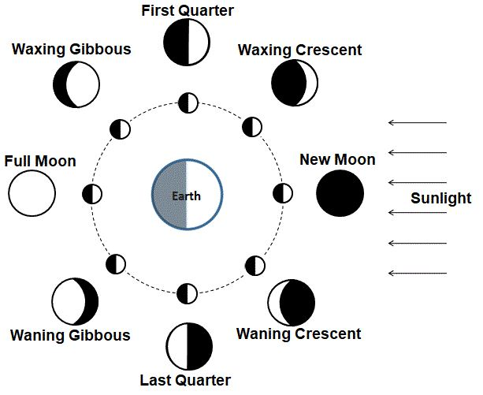

The Surah calls people to follow the Quran. It puts forward the signs of the Quran‘s divinity and promises rewards for the followers.
সূরাটি মানুষকে কুরআন অনুসরণ করার আহ্বান জানায়। এটি কুরআনের দেবত্বের নিদর্শনগুলিকে সামনে রাখে এবং অনুসারীদের জন্য পুরস্কারের প্রতিশ্রুতি দেয়।
Tafsir of the Surah Section 1 of Chapter 36 [Verse 1-12]: Admonish People that follow the Message and fear God
সূরা 36 অধ্যায়ের 1 ধারার তাফসির [আয়াত 1-12]: লোকেদের উপদেশ দিন যারা বার্তা অনুসরণ করে এবং আল্লাহকে ভয় করে
Ya, Sin. By the Qur'an, full of Wisdom, thou art indeed one of the apostles on a Straight Way. It is a Revelation sent down by the Exalted in Might, Most Merciful in order that thou may admonish a people whose fathers had received no admonition, and who therefore remain heedless. The word is proved true against the greater part of them; for they do not believe. We have put yokes round their necks right up to their chins so that their heads are forced up. And We have put a bar in front of them and a bar behind them, and further We have covered them up so that they cannot see. The same is it to them whether thou admonish them, or thou do not admonish them; they will not believe. Thou can but admonish such a one as follows the Message and fears the Most Gracious, unseen. Give such a one, therefore, good tidings of Forgiveness and a Reward most generous. Verily, We shall give life to the dead, and We record that which they send before, and that which they leave behind; and of all things have We taken account in a clear Book.
হ্যাঁ, পাপ। জ্ঞানে পরিপূর্ণ কোরআনের কসম, আপনি সত্যই সরল পথের প্রেরিতদের একজন। এটি পরাক্রমশালী, পরম করুণাময় আল্লাহর পক্ষ থেকে অবতীর্ণ একটি প্রত্যাদেশ যাতে আপনি এমন একটি সম্প্রদায়কে উপদেশ দিতে পারেন যাদের পিতৃপুরুষরা কোন উপদেশ পায়নি এবং তাই তারা গাফেল রয়েছে। কথাটি তাদের বৃহত্তর অংশের বিরুদ্ধে সত্য প্রমাণিত হয়; কারণ তারা বিশ্বাস করে না। আমরা তাদের ঘাড়ে জোয়াল রেখেছি তাদের চিবুক পর্যন্ত যাতে তাদের মাথা জোর করে উপরে উঠতে পারে। এবং আমি তাদের সামনে একটি দন্ড রেখেছি এবং তাদের পিছনে একটি দণ্ড দিয়েছি এবং আরও ঢেকে রেখেছি যাতে তারা দেখতে পায় না। তুমি তাদেরকে উপদেশ দাও বা উপদেশ না দাও তাদের জন্য সমান। তারা বিশ্বাস করবে না। আপনি এমন ব্যক্তিকে উপদেশ দিতে পারেন যে বাণী অনুসরণ করে এবং পরম করুণাময়, অদৃশ্যকে ভয় করে। অতঃপর এমন একজনকে ক্ষমার সুসংবাদ দিন এবং সবচেয়ে উদার পুরস্কার। আমি মৃতকে জীবিত করব এবং তারা যা আগে পাঠায় এবং যা তারা রেখে যায় তা লিপিবদ্ধ করি। আর আমি সব কিছুর হিসাব সুস্পষ্ট কিতাবে রেখেছি।
Set forth to them by way of a parable the Companions of the City. Behold! There came apostles to it. When We sent to them two apostles, they rejected them. But We strengthened them with a third. They said: "Truly, we have been sent on a mission to you." The (people) said: "Ye are only men like ourselves, and Most Gracious sends no sort of revelation; ye do nothing but lie." They said: "Our Lord does know that we have been sent on a mission to you, and our duty is only to proclaim the clear Message." The (people) said: ―For us, we augur an evil omen from you. If ye desist not, we will certainly stone you. And a grievous punishment indeed will be inflicted on you by us.‖ They said: ―Your evil omens are with yourselves. Is it because you are admonished? Nay, you are a people transgressing!‖ Then there came running from the farthest part of the city a man, saying: "O my people! Obey the apostles; obey those who ask no reward of you, and who have themselves received Guidance. It would not be reasonable in me if I did not serve Him Who created me, and to Whom you shall be brought back. Shall I take gods besides Him? If Most Gracious should intend some adversity for me, of no use whatever will be their intercession for me, nor can they deliver me. I would indeed, if I were to do so, be in manifest error. For me, I have faith in the Lord of you; listen then to me!" It was said: "Enter thou the Jannaat." He said: "Ah me! Would that my People knew! For that my Lord has granted me Forgiveness and has enrolled me among those held in honor!" And We sent not down against his People after him any hosts from sky, nor was it needful for Us so to do. It was no more than a single mighty Blast, and behold, they were quenched and silent. Ah! Alas for servants! There comes not an apostle to them but they mock him!
শহরের সাথীদের একটি দৃষ্টান্তের মাধ্যমে তাদের সামনে তুলে ধরুন। দেখো! সেখানে প্রেরিতরা এসেছিলেন। যখন আমি তাদের কাছে দু’জন রসূল প্রেরণ করেছিলাম, তখন তারা তাদের প্রত্যাখ্যান করেছিল। কিন্তু আমি তাদেরকে এক তৃতীয়াংশ দিয়ে শক্তিশালী করেছিলাম। তারা বললঃ সত্যি, আমরা আপনার কাছে একটি মিশনে প্রেরিত হয়েছি। (লোকেরা) বললঃ তোমরা তো আমাদের মতই মানুষ এবং পরম করুণাময় কোন প্রকার ওহী পাঠান না, তোমরা মিথ্যা ছাড়া কিছুই কর না। তারা বললঃ আমাদের রব জানেন যে, আমরা আপনার কাছে প্রেরিত হয়েছি এবং আমাদের দায়িত্ব কেবল সুস্পষ্ট বাণী প্রচার করা। (লোকেরা) বললো, আমাদের জন্য আমরা আপনার কাছ থেকে অশুভ লক্ষণ প্রকাশ করছি। তোমরা যদি বিরত না হও, আমরা অবশ্যই তোমাদেরকে পাথর ছুড়ে মারব। আর আমাদের দ্বারা তোমাদের উপর অবশ্যই কঠিন শাস্তি হবে।’’ তারা বলল, ‘‘তোমাদের অশুভ অশুভ তোমাদের নিজেদের মধ্যেই রয়েছে। এটা কি কারণ আপনি উপদেশ? না, তোমরা সীমালঙ্ঘনকারী সম্প্রদায়!'' তখন শহরের দূরবর্তী এলাকা থেকে এক ব্যক্তি ছুটে এসে বললো: "হে আমার সম্প্রদায়! প্রেরিতদের আনুগত্য কর, আনুগত্য কর তাদের, যারা তোমাদের কাছে কোন প্রতিদান চায় না এবং যারা নিজেরাই হেদায়েত লাভ করে। যিনি আমাকে সৃষ্টি করেছেন এবং যার কাছে তোমাদের ফিরিয়ে আনা হবে, তার এবাদত না করলে এটা আমার কাছে যুক্তিসঙ্গত হবে না। আমার জন্য তাদের সুপারিশ কোন কাজে আসবে না, আমি যদি তা করি, তবে আমার জন্য আমি আপনার প্রভুর প্রতি বিশ্বাস রাখব! বলা হলঃ তুমি জান্নাতে প্রবেশ কর। তিনি বললেনঃ হায়! আমার উম্মত যদি জানত! কেননা আমার পালনকর্তা আমাকে ক্ষমা করেছেন এবং আমাকে সম্মানিত ব্যক্তিদের অন্তর্ভুক্ত করেছেন! আর আমি তাঁর পরে তাঁর সম্প্রদায়ের বিরুদ্ধে আকাশ থেকে কোনো বাহিনী অবতীর্ণ করিনি এবং তা করা আমাদের জন্য আবশ্যকও ছিল না। এটি একটি একক শক্তিশালী বিস্ফোরণ ছাড়া আর কিছু ছিল না, এবং দেখুন, তারা নিভৃত এবং নীরব ছিল। আহ! হায়রে বান্দাদের জন্য! তাদের কাছে কোন রসূল আসে না কিন্তু তারা তাকে ঠাট্টা করে!
Some opine that the two messengers were John and Barnabas, and the third was Paul, who preached together in Antioch for about a year. Probably, they were trapped in a hostile part of the city when a follower came running from another part of the city to save them. The people killed the follower, but the messengers managed to escape. Antioch was located on the eastern side of the Orontes River and was a major city of ancient Greece. Today, its ruins lie near the city of Antakya in Turkey. History suggests that Antioch was abandoned due to repeated earthquakes and changes in trade routes. It is possible that parts of the city were destroyed by an earthquake at the time they killed the follower. However, the verses state that the people were silenced and quenched: "It was no more than a single mighty Blast, and behold, they were quenched and silent." The 'mighty blast' may not necessarily refer to an 'earthquake'; it could also signify a 'mighty sound' that killed the people. We do not know John, Barnabas, and Paul as prophets. According to Paul‘s account, angels guided him to preach the religion in the West. If angels guided him, he may be considered a 'prophet without a divine book (Nabi).' The Book of Acts states that after a year, they returned from Antioch with great success. How did they achieve such success in such a short time? Something significant must have happened—perhaps the death of the people who killed the follower.
কেউ কেউ মনে করেন যে দুজন বার্তাবাহক ছিলেন জন এবং বার্নাবাস এবং তৃতীয়জন ছিলেন পল, যিনি প্রায় এক বছর ধরে এন্টিওকে একসাথে প্রচার করেছিলেন। সম্ভবত, তারা শহরের একটি প্রতিকূল অংশে আটকা পড়েছিল যখন একজন অনুসারী তাদের বাঁচাতে শহরের অন্য অংশ থেকে ছুটে আসে। লোকেরা অনুগামীকে হত্যা করেছিল, কিন্তু দূতরা পালিয়ে যেতে সক্ষম হয়েছিল। অ্যান্টিওক ওরোন্টেস নদীর পূর্ব দিকে অবস্থিত ছিল এবং এটি প্রাচীন গ্রিসের একটি প্রধান শহর ছিল। আজ, এর ধ্বংসাবশেষ তুরস্কের আনতাক্যা শহরের কাছে রয়েছে। ইতিহাস থেকে জানা যায় যে বারবার ভূমিকম্প এবং বাণিজ্য পথের পরিবর্তনের কারণে অ্যান্টিওক পরিত্যক্ত হয়েছিল। এটা সম্ভব যে তারা অনুসারীকে হত্যা করার সময় শহরের কিছু অংশ ভূমিকম্পে ধ্বংস হয়ে গিয়েছিল। যাইহোক, আয়াতগুলি বলে যে লোকেদের নীরব করা হয়েছিল এবং নিভিয়ে দেওয়া হয়েছিল: "এটি একটি একক শক্তিশালী বিস্ফোরণ ছাড়া আর কিছু ছিল না, এবং দেখুন, তারা নিভৃত এবং নীরব ছিল।" 'শক্তিশালী বিস্ফোরণ' অগত্যা একটি 'ভূমিকম্প' উল্লেখ নাও হতে পারে; এটি একটি 'শক্তিশালী শব্দ'ও বোঝাতে পারে যা মানুষকে হত্যা করেছিল। আমরা জন, বার্নাবাস এবং পলকে ভাববাদী হিসাবে জানি না। পলের বিবরণ অনুসারে, ফেরেশতারা তাকে পশ্চিমে ধর্ম প্রচার করার জন্য নির্দেশনা দিয়েছিলেন। যদি ফেরেশতারা তাকে পথ দেখান, তাহলে তাকে 'একটি ঐশ্বরিক গ্রন্থ (নবী) ছাড়া একজন নবী' হিসেবে বিবেচনা করা যেতে পারে। আইনের বইতে বলা হয়েছে যে এক বছর পর, তারা এন্টিওক থেকে দুর্দান্ত সাফল্যের সাথে ফিরে আসে। এত অল্প সময়ে এত সাফল্য তারা কীভাবে পেল? উল্লেখযোগ্য কিছু নিশ্চয়ই ঘটেছে—সম্ভবত সেই লোকদের মৃত্যু যারা অনুগামীকে হত্যা করেছিল।
Note:
দ্রষ্টব্য:
Modern Christianity has widely deviated and is divided into many sects over its basic concepts. Section 3 of Chapter 36 [Verse 31-44]: The Signs
আধুনিক খ্রিস্টধর্ম ব্যাপকভাবে বিচ্যুত হয়েছে এবং তার মৌলিক ধারণার জন্য অনেক সম্প্রদায়ে বিভক্ত। অধ্যায়ের 36 অধ্যায় [31-44 পদ]: লক্ষণ
See they not how many generations before them we destroyed! Not to them will they return, but each one of them, all, will be brought before Us. A sign for them is the earth that is dead. We do give it life and produce grain there-from, of which you do eat. And We produce therein orchard with date-palms, and vines, and We cause springs to gush forth therein that they may enjoy the fruits of this. It was not their hands that made this; will they not then give thanks? Glory to God Who created all things that the earth produces, as well as their own kind, and things of which they have no knowledge from Pairs (Double Helix DNA Molecules).
তারা দেখে না তাদের পূর্বে কত প্রজন্মকে আমরা ধ্বংস করেছি! তারা তাদের কাছে ফিরে আসবে না, বরং তাদের প্রত্যেককে, সবাইকে আমাদের সামনে হাজির করা হবে। তাদের জন্য একটি নিদর্শন হল মৃত পৃথিবী। আমরা তাকে জীবন দান করি এবং সেখান থেকে শস্য উৎপন্ন করি, যা থেকে তোমরা খাও। আর আমি তাতে খেজুর ও লতা-পাতার বাগান উৎপন্ন করি এবং তাতে ঝর্ণাধারা প্রবাহিত করি যাতে তারা এর ফল ভোগ করতে পারে। এটা তাদের হাত ছিল না যে এটা করেছে; তারা কি কৃতজ্ঞতা প্রকাশ করবে না? ঈশ্বরের মহিমা যিনি পৃথিবী উৎপন্ন করে এমন সমস্ত জিনিস তৈরি করেছেন, সেইসাথে তাদের নিজস্ব ধরণের, এবং এমন জিনিস যা তাদের জোড়া থেকে কোন জ্ঞান নেই (ডাবল হেলিক্স ডিএনএ অণু)।
The verse in the last paragraph states that all living creatures on Earth are created from Pairs. But, many living creatures, such as amoeba and bacteria, do not have distinct sexual categories. Therefore, in this verse, the word 'pairs' does not refer to 'pairs of males and females'; rather, it refers to the 'double helix DNA molecule' that produces all living creatures, including humans. The Quran mentions the concept of pairs multiple times; I have discussed these verses in detail in Section 3 of Chapter 31. However, a virus does not have a double helix structure in its DNA. This is also clarified in the verse above by the words 'all things that the earth produces.' A virus is not produced by the Earth; it is produced only within living creatures (hosts). While a virus can exist outside a host for some time, it requires a host to replicate. Furthermore, the verse is referring to living creatures, whereas a virus is considered non-living.
শেষ অনুচ্ছেদের শ্লোকটি বলে যে পৃথিবীর সমস্ত জীবিত প্রাণী জোড়া থেকে সৃষ্টি হয়েছে। কিন্তু, অনেক জীবন্ত প্রাণী যেমন অ্যামিবা এবং ব্যাকটেরিয়া, তাদের আলাদা যৌন বিভাগ নেই। অতএব, এই আয়াতে 'জোড়া' শব্দটি 'নর-নারীর জোড়া' বোঝায় না; বরং, এটি 'ডাবল হেলিক্স ডিএনএ অণু' নির্দেশ করে যা মানুষ সহ সমস্ত জীবন্ত প্রাণী তৈরি করে। কুরআন জোড়ার ধারণা একাধিকবার উল্লেখ করেছে; আমি এই আয়াতগুলো নিয়ে বিস্তারিত আলোচনা করেছি অধ্যায়ের ৩১ অধ্যায়ের ৩-এ। যাইহোক, একটি ভাইরাসের ডিএনএতে ডাবল হেলিক্স গঠন থাকে না। উপরের আয়াতে 'পৃথিবী যা উৎপন্ন করে' এই কথার মাধ্যমেও এটি স্পষ্ট করা হয়েছে। একটি ভাইরাস পৃথিবী দ্বারা উত্পাদিত হয় না; এটি শুধুমাত্র জীবন্ত প্রাণীর (হোস্ট) মধ্যে উত্পাদিত হয়। যদিও একটি ভাইরাস কিছু সময়ের জন্য হোস্টের বাইরে থাকতে পারে, এটির প্রতিলিপি করার জন্য একটি হোস্টের প্রয়োজন। তদ্ব্যতীত, আয়াতটি জীবন্ত প্রাণীর কথা উল্লেখ করছে, যেখানে একটি ভাইরাসকে নির্জীব হিসাবে বিবেচনা করা হয়।
FIGURE 36.1: DNA Double Helix (Pairs)

চিত্র 36_1 / Figure 36_1
চিত্র 36.1: DNA ডাবল হেলিক্স (জোড়া)
চিত্র 36_1 / Figure 36_1
The above verses compare the growth of plants with the resurrection of mankind. The functions of 98% of DNA are not yet known. It may be possible that a set of double helix DNA molecules can produce a cell if the proper substances are supplied. According to the Hadith, these substances will be rained down on the Day of Resurrection. Thus, a set of double helix DNA molecules (46 for a human) will form a cell. This cell will be attached to the nafs (soul), and the body will grow on the land with the supplied substances. DNA molecules can survive in nature for hundreds of thousands of years. There are trillions of DNA molecules in the human body. In the environment of resurrection, many DNA molecules will produce cells and multiply. These cells will form lumps of flesh. Just as a cell multiplied in a test tube forms a lump of flesh; it does not create a complete physique. Only the cells that will be attached to the nafses (souls) will form the bodies. The environment of resurrection will eventually end, and the lumps of flesh will rot. These will produce pus, which the hungry dwellers of Hell will consume.
উপরের আয়াতগুলো মানবজাতির পুনরুত্থানের সাথে উদ্ভিদের বৃদ্ধির তুলনা করে। ডিএনএর 98% কার্যকারিতা এখনও জানা যায়নি। এটা সম্ভব যে সঠিক পদার্থ সরবরাহ করা হলে ডাবল হেলিক্স ডিএনএ অণুর একটি সেট একটি কোষ তৈরি করতে পারে। হাদিসে বলা হয়েছে, কিয়ামতের দিন এসব পদার্থের ওপর বৃষ্টি বর্ষণ করা হবে। এইভাবে, ডাবল হেলিক্স ডিএনএ অণুর একটি সেট (একজন মানুষের জন্য 46) একটি কোষ গঠন করবে। এই কোষটি নফস (আত্মা) এর সাথে সংযুক্ত থাকবে এবং দেহ সরবরাহকৃত পদার্থের সাথে জমিতে বৃদ্ধি পাবে। ডিএনএ অণু প্রকৃতিতে কয়েক হাজার বছর ধরে বেঁচে থাকতে পারে। মানুষের শরীরে ট্রিলিয়ন ডিএনএ অণু রয়েছে। পুনরুত্থানের পরিবেশে, অনেক ডিএনএ অণু কোষ তৈরি করবে এবং সংখ্যাবৃদ্ধি করবে। এই কোষগুলি মাংসের পিণ্ড তৈরি করবে। টেস্ট টিউবে একটি কোষের সংখ্যা যেমন একটি মাংসের পিণ্ড তৈরি করে; এটি একটি সম্পূর্ণ শরীর তৈরি করে না। যে কোষগুলো নফসে (আত্মা) এর সাথে সংযুক্ত থাকবে সেগুলোই দেহ গঠন করবে। পুনরুত্থানের পরিবেশ শেষ পর্যন্ত শেষ হবে, এবং মাংসের পিণ্ডগুলি পচে যাবে। এগুলো পুঁজ উৎপন্ন করবে, যা জাহান্নামের ক্ষুধার্তরা গ্রাস করবে।
And a sign for them is the night. We withdraw there-from the day, and behold, they are plunged in darkness.
আর তাদের জন্য নিদর্শন হল রাত। আমরা সেখান থেকে প্রত্যাহার করি - দিন থেকে, এবং দেখ, তারা অন্ধকারে নিমজ্জিত।
Energy cannot be destroyed. Scientists calculate that if the universe were static (neither expanding nor contracting), the light emitted by stars would make the sky immensely bright. On Earth, this would result in light being forty thousand times brighter than the sun at noon. The universe is dark because the space is expanding. Thus, when the day is withdrawn due to the Earth‘s rotation, we are plunged into darkness. [This relates to Olber‘s Paradox, as discussed in Section-4 of Chapter- 21.]
শক্তি ধ্বংস করা যাবে না। বিজ্ঞানীরা গণনা করেন যে যদি মহাবিশ্ব স্থির হত (সম্প্রসারণ বা সংকোচন না হয়), তারা দ্বারা নির্গত আলো আকাশকে অত্যন্ত উজ্জ্বল করে তুলত। পৃথিবীতে, এর ফলে দুপুরের আলো সূর্যের চেয়ে চল্লিশ হাজার গুণ বেশি উজ্জ্বল হবে। মহাবিশ্ব অন্ধকার কারণ মহাকাশ প্রসারিত হচ্ছে। এইভাবে, যখন পৃথিবীর ঘূর্ণনের কারণে দিন প্রত্যাহার করা হয়, তখন আমরা অন্ধকারে নিমজ্জিত হই। [এটি ওলবারের প্যারাডক্সের সাথে সম্পর্কিত, যেমনটি অধ্যায়- 21-এর ধারা-4-এ আলোচনা করা হয়েছে।]
And the sun runs his course for a period determined for him. That is the decree of the Exalted in Might, the All- Knowing. And the Moon, We have measured for her phases till she returns like the old lower part of a date-stalk.
এবং সূর্য তার জন্য নির্ধারিত সময়ের জন্য তার গতিপথ চালায়। এটা পরাক্রমশালী, সর্বজ্ঞের আদেশ। এবং চাঁদ, আমরা তার পর্যায়গুলির জন্য পরিমাপ করেছি যতক্ষণ না সে খেজুরের ডালের পুরানো নীচের অংশের মতো ফিরে আসে।
The shapes of the lit portions of the Moon, which are seen from Earth, are known as the Phases of Moon. Each phase repeats itself every 29.5 days. There are 8 major phases:
চাঁদের আলোকিত অংশগুলির আকার, যা পৃথিবী থেকে দেখা যায়, চাঁদের পর্যায় হিসাবে পরিচিত। প্রতিটি পর্যায় প্রতি 29.5 দিনে নিজেকে পুনরাবৃত্তি করে। 8টি প্রধান পর্যায় রয়েছে:
FIGURE 36.2: Phases of the Moon It is not permitted to the sun to catch up the moon, nor can the night outstrip the day, but all in a galaxy (falakin / a domain of space / a ship / a space ship / a galaxy) they are floating.

চিত্র 36_2 / Figure 36_2
চিত্র 36.2: চাঁদের পর্যায় সূর্যের জন্য চাঁদকে ধরার অনুমতি নেই, না রাত দিনের চেয়ে ছাড়িয়ে যেতে পারে, তবে সমস্ত একটি গ্যালাক্সিতে (ফালাকিন / মহাকাশের একটি ডোমেন / একটি জাহাজ / একটি মহাকাশ জাহাজ / একটি গ্যালাক্সি) তারা ভাসছে।
চিত্র 36_2 / Figure 36_2